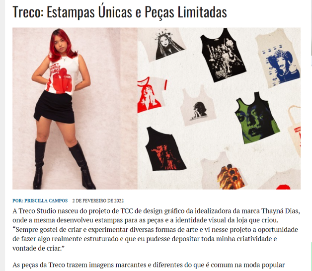

Na imagem, uma captura de tela da matéria sobre a
Treco Studio no Jornal do Estado do Rio de Janeiro
A Treco nasceu a partir do TCC da criadora da
loja em 2021, e a partir de então vem crescendo
mais e mais. O punk vintage é definitivamente a
base das nossas inspirações, assim como peças
vintages de designers como Jean Paul Gaultier
e marcas como Cop Copine e Save The Queen.
A estética que buscamos trazer é uma releitura
do punk vintage, trazendo suas características,
mas mesclando a modernidade. Peças gráficas
marcantes, com cores vibrantes e imagens
excêntricas.